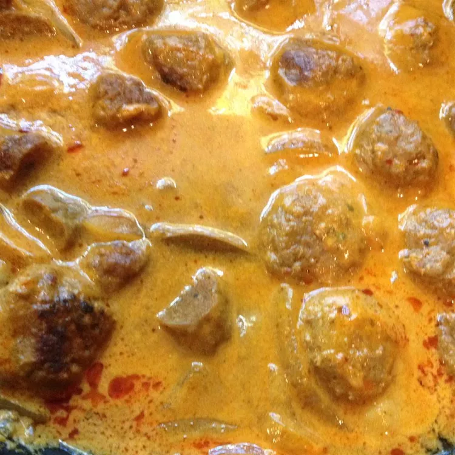

Mutton Stew

Description
When I visit the land of mortals, my favorite dish is always mutton stew. I don't know what it is about this particular animal but they are as delicious as they are fluffy.
With just thirty minutes of your time you too can eat as if you are in the land of mortals and pretend the worries of Asgard don't exist.
Ingredients
- 3 pounds of cubed mutton
- 15 cups of boiling water
- 1 bone (any species)
- Salt
Steps
- Place mutton meat in boiling water.
- Just joking start boiling the water with the meat already in it over a fire first, I know you brought cold water, remember I'm Odin I see everything.
- Go find a bone, I know you forgot to get one.
- Throw the bone in the boiling water with the mutton.
- Add salt to taste.
- Allow to boil for 5 hours.